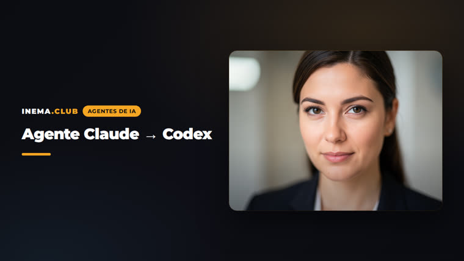

Kit de auditoria, adaptadores e núcleo portátil pra levar seu setup Claude Code pro Codex, ou pra deixar contexto, decisões, tarefas e skills funcionando em qualquer modelo.
A newsletter fala em três níveis: importar no app (um clique), rodar um comando, e cuidar da camada pessoal durável. Este repo é o nível 2 e o nível 3, com scripts que começam em modo audit e só depois alteram alguma coisa.
Inventaria skills, comandos, subagentes, hooks, plugins e MCP do Claude e do Codex e classifica cada item: reutilizável, adaptador, nativo ou não resolvido. Nada é copiado em massa.
CLAUDE.md vira AGENTS.md portátil mais um resíduo específico do Claude. Skills têm uma fonte canônica e cópias geradas por runtime com checagem de drift.
Sessão nova em cada runtime responde: objetivo, regra e fonte, última decisão, próxima ação, conflitos. Arquivo existir não é prova. O agente ter lido e usado é.
O núcleo (contexto, decisões, tarefas, skills, handoffs) fica em Markdown comum dentro do projeto. Nas bordas, um adaptador por ferramenta. Claude, Codex, Gemini ou modelo local viram só executores.
AGENTS.md, context/overview.md, context/current-state.md, context/sources.md, context/decisions/, tasks/current.md, handoffs/latest.md, .agents/skills/, scripts/.
Instruções estáveis, estado atual, decisões, tarefas e handoffs têm dono e regra de atualização. Fato, preferência, hipótese e decisão são coisas diferentes.
Sessão → handoff em Markdown → nova sessão lê o handoff (prime). O resumo estruturado viaja pra qualquer provedor.
Os scripts leem as pastas de configuração dos dois runtimes. Sem um deles, o passo correspondente é marcado como não rodado.
Fonte da migração. Skills em ~/.claude/skills.
# versão claude --version
Destino. Skills em ~/.codex/skills e ~/.agents/skills. O CLI não tem import nativo.
# versão e diagnóstico codex --version codex doctor
Converte uma skill numa fonte portátil e gera as cópias por runtime.
# instalar npm i -g polyskill
Cada passo é reversível. Instalar skill faz backup ao lado. Segredos nunca entram no repo.
Responde "meu ambiente está pronto?": git, python3, node, Claude Code, Codex CLI, sandbox, MCP, polyskill. Cada item sai como ok, aviso ou falta, com o comando pra resolver.
git clone https://github.com/inematds/agente-claude-codex cd agente-claude-codex scripts/doctor.sh # [ok] / [aviso] / [FALTA]
Gera um relatório em Markdown com versões, gap de skills e a matriz reutilizável / adaptador / nativo. Somente leitura.
scripts/audit.sh # relatorios/auditoria-AAAA-MM-DD.md
Lê o CLAUDE.md do projeto e propõe um AGENTS.md portátil e um CLAUDE.md que importa o AGENTS.md. Grava como .proposto.md pra você revisar.
scripts/adapt-instructions.sh ~/projetos/meu-projeto # revisar AGENTS.proposto.md e CLAUDE.proposto.md, depois renomear
Copia o template (context/, tasks/, handoffs/, AGENTS.md) sem sobrescrever nada que já exista.
scripts/init-core.sh ~/projetos/meu-projeto # depois preencher AGENTS.md, context/overview.md e tasks/current.md
Piloto recomendado: session-handoff, o mecanismo em que o ciclo diário se apoia. Importa, gera as cópias, instala e checa drift.
scripts/sync-skills.sh import session-handoff scripts/sync-skills.sh build scripts/sync-skills.sh install session-handoff --both scripts/sync-skills.sh drift # [ok] ou [DRIFT] por runtime
Faz as cinco perguntas do readback ao Claude e ao Codex a partir do projeto. Aprovação: as respostas citam AGENTS.md, tasks/current.md e handoffs/latest.md.
scripts/readback-test.sh ~/projetos/meu-projeto both # relatorios/readback-claude-*.md e readback-codex-*.md
A auditoria encontrou 89 skills só no Claude: 71 portáteis, 15 dependentes de MCP ou plugin, 2 de hook. O readback foi aprovado no Codex e no Claude, e o Codex ainda apontou três inconsistências no próprio repo, todas corrigidas.

Só avança de fase com evidência: passou, falhou ou não rodado.